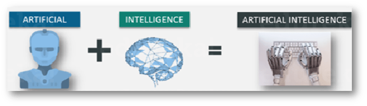
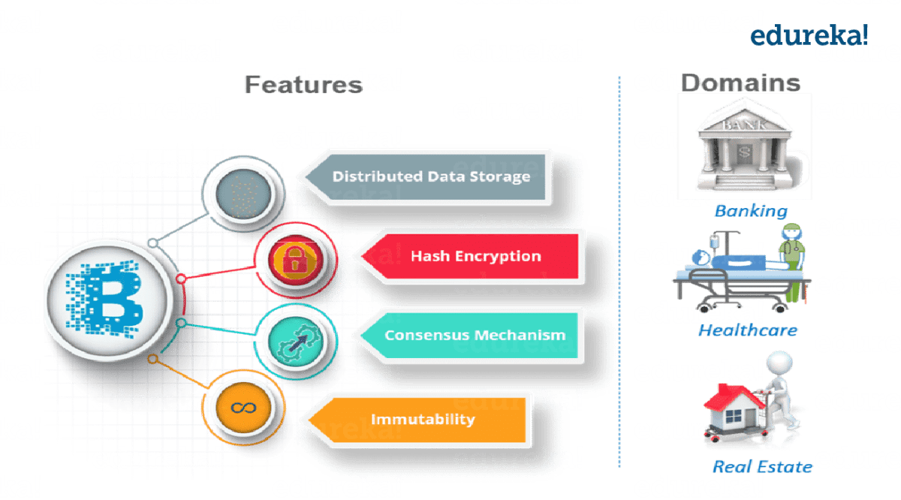
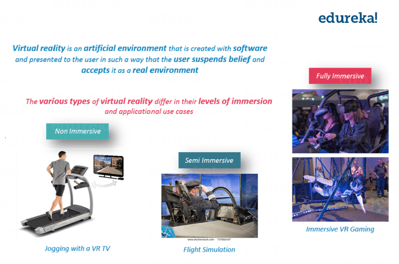

This site is very useful for students those who studying engineering. See the latest in the tech world news and latest projects and full view of pcb design.
This site is very useful for students those who studying engineering. See the latest in the tech world news and latest projects and full view of pcb design.
let’s make a new year resolution to master any one of the below technologies:
Artificial Intelligence Training – Explore the Curriculum to Master AI and Deep Learning.
AI existed even before the internet was born, but it is now that the data processing and compute power backbone became strong enough to sustain an entire technology by itself.
AI is everywhere today, from your smartphones to your cars to your home to your banking establishment.
Blockchain Training – Explore the Curriculum to Master Blockchain.
This is the tech that powers bitcoins, the whole new parallel currency that has taken over the world.
Interestingly, blockchain as a technology has far-reaching potential in everything from healthcare to elections to real estate to law enforcement.
Virtual is real! VR and AR, the twin technologies that let you experience things in virtual, that are extremely close to real, are today being used by businesses of all sizes and shapes. But the underlying technology can be quite complex.
Medical students use AR technology to practice surgery in a controlled environment.
VR on the other hand, opens up newer avenues for gaming and interactive marketing.
This one is a veteran.
Most other technologies on this list are alive only because of the proliferation of cloud computing
By allowing companies to save money, and users to simplify their computing needs, Cloud Computing is one of the most trending technologies that will stay popular in 2019, without a doubt.
Angular and React Training – Explore the Curriculum to Master Angular and React.
Angular and React are JavaScript based Frameworks for creating modern web applications. Using React and Angular one can create a highly modular web app. So, you don’t need to go through a lot of changes in your code base for adding a new feature.
Angular and React also allows you to create a native mobile application with the same JS, CSS & HTML knowledge. Best part – Open source library with highly active community support.
DevOps Training – Explore the Curriculum to Master DevOps tools.
This is the odd one out in the list. It is not a technology, but a methodology.
DevOps is a methodology that ensures that both the development and operations go hand in hand. DevOps cycle is picturized as an infinite loop representing the integration of developers and operation teams by:
automating infrastructure,
workflows and
continuously measuring application performance.
BAnother buzzword that no longer remains a buzzword but has become a full-fledged technology ecosystem in itself.
IoT essentially is connecting many devices and creating a virtual network where everything works seamlessly via a single monitoring center of sorts.
IoT is a giant network of connected devices – all of which gather and share data about how they are used and the environments in which they are operated.
This includes everything from your:
mobile phones,
refrigerator,
washing machines to almost everything that you can think of.
With IoT, we can have smart cities with optimized:
traffic system,
efficient waste management and
energy use
I-Apps are pieces of software written for mobile devices based on artificial intelligence and machine learning technology, aimed at making everyday tasks easier.
his involves tasks like organizing and prioritizing emails, scheduling meetings, logging interactions, content, etc. Some familiar examples of I-Apps are Chatbots and virtual assistants..
Big Data and Hadoop Training – Explore the Curriculum to Master Big Data and Hadoop.
Big data refers to problems that are associated with processing and storing different types of data. Most of the companies today, rely on big data analytics to gain huge insight about their:customer,
product research,
marketing initiatives and many more.
For your surprise, big data led Germany to win the world cup.
Hadoop and Spark are the two most famous frameworks for solving Big Data problems.
RPA Training – Explore the Curriculum to Master RPA.
Generally, any desk job in any industry involves tasks that are repetitive in nature and can be automated.
RPA or Robotic Process Automation allows you to automate such routine and repetitive tasks.
You don’t need to write any code to automate repetitive task
Subscribe to Blog via EmailEnter your email address to subscribe to this blog and receive notifications of new posts by email.Join 6 other subscribers.